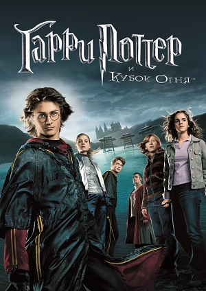

Фільми
Гаррі Поттер і Філософський Камінь (2001)
Перший фільм із серії фільмів про хлопчика-чарівника Гаррі Поттера, екранізація однойменного роману британської письменниці Дж. К. Роулінг.
Гаррі Поттер — хлопець-сирота, вихований маґлами (тіткою Петунією та дядьком Верноном). Коли йому виповнилось одинадцять років Рубеус Геґрід повідомляє Гаррі, що він насправді є чарівником, а його батьків вбив темний чарівник Лорд Волдеморт. Волдеморт також намагався вбити однорічного Гаррі тієї ж ночі, але його смертельне закляття відбилося від Гаррі і призвело до слабкої та безпорадної форми самого Волдеморта. У результаті Гаррі став надзвичайно відомим у світі чарівників. Гаррі починає свій перший курс у Гоґвортсі — школи чаклунства та магії. Протягом року Гаррі та його друзі Рон Візлі та Герміона Грейнджер дізнаються таємницю філософського каменю, який зберігається у школі.
Гаррі Поттер і Таємна Кімната (2002)
Гаррі, Рон і Герміона повертаються до Гоґвортсу на другий рік, який видасться набагато важчим, ніж перший. Гаррі дізнається, що в Гоґвортсі мешкає чудовисько — Василіск. Гаррі розуміє, що він, як і Салазар Слизерин, здатен говорити Парселмовою, і виявляє дивні властивості таємничого щоденника, який належить Тому Марволо Редлу.
Гаррі Поттер і В'язень Азкабану (2004)
Третій рік навчання Гаррі Поттера у Гоґвортсі. Професор Ремус Дж. Люпин обіймає посаду вчителя захисту проти темних мистецтв в той час, як засуджений вбивця Сіріус Блек втікає з Азкабану. Міністерство магії доручає дементорам захищати Гоґвортс від Блека. Гаррі дізнається більше про своє минуле та про зв'язок із Сіріусом.
«Гаррі Поттер і в'язень Азкабану» — єдиний фільм з серії, який ніколи не входив у 50 найбільш касових фільмів усіх часів.
Гаррі Поттер і Келих Вогню (2005)

Під час четвертого курсу у Гоґвортсі відбувається легендарна подія: Турнір трьох чарівників. У турнірі беруть участь три школи, з трьома «чемпіонами», які представляють кожну школу у смертельних завданнях. Келих вогню серед усіх бажаючих взяти участь в турнірі вибирає Флер Делакур, Віктора Крама та Седрика Діґорі. Однак, ім'я Гаррі також випадає з келиха, що робить його четвертим чемпіоном і надалі призводить до зустрічі з відродженим Лордом Волдемортом.
Гаррі Поттер і Орден Фенікса (2007)

П'ятий рік Гаррі починається з того, що він натрапляє на дементорів у маленькому містечку Літтл Уінґінґ. Пізніше він дізнається, що Міністерство магії заперечує повернення Лорда Волдеморта. Гаррі мучать тривожні та реалістичні кошмари, а професорка Долорес Амбрідж, заступниця міністра магії Корнеліуса Фаджа, стає новим вчителем захисту проти темних сил. Гаррі усвідомлює, що Волдеморт хоче вбити його через пророцтва, яке говорить: «Один не зможе жити, допоки живий інший». У п'ятій частині також відбувається повстання за участю студентів Гоґвортсу і таємної організації Орден Фенікса проти Міністерства магії та Смертежерів.
Гаррі Поттер і Напівкровний Принц (2009)

На шостому році Гаррі у Гоґвортсі Лорд Волдеморт і його смертежери посилюють страх світу чарівників перед ними. Директор Альбус Дамблдор переконує свого старого друга Горація Слизорога повернутися до Гоґвортсу професором, оскільки є вакантна посада. Однак, існує важлива причина для повернення Слизорога. У той самий час на уроці зіллєваріння Гаррі знаходить старий шкільний підручник, підписаний як «Власність Напівкровного принца». Драко Малфой намагається виконати завдання, доручене йому Волдемортом. Тим часом Дамблдор і Гаррі таємно працюють разом, щоб знайти спосіб знищити Темного Лорда раз і назавжди.
Гаррі Поттер і Смертельні Реліквії — Частина 1 (2010)
Після несподіваних подій наприкінці попереднього року Гаррі, Рону та Герміоні доручають шукати та знищити таємницю Лорда Волдеморта — горокракси. Очікується, що це буде їх останній рік у Гоґвортсі, але розпад Міністерства Магії та прихід Волдеморта до влади не дозволяє їм відвідувати школу. Тріо проходить довгий шлях з багатьма перешкодами на своєму шляху, включаючи смертежерв, ненависників і загадкові Смертельні реліквії. Зв'язок Гаррі зі свідомістю Темного Лорда стає все сильнішим.
Гаррі Поттер і Смертельні Реліквії — Частина 2 (2011)
Після знищення одного горокракса і виявлення значущості Смертельних реліквій, Гаррі, Рон та Герміона продовжують шукати інші горокракси, щоб вбити Волдеморта, який зараз отримав наймогутнішу у світі бузинову паличку. Темний Лорд викриває плани трійці й розпочинає атаку на Гоґвортс, куди тріо повертається на останнє протистояння темним силам, які загрожують світу чарівників та світу маґлів.
«Гаррі Поттер і Дари Смерті — частина 2» — один з 30 фільмів із касовим збором на загальну суму понад 1 млрд доларів, а це 8 місце серед найбільш касових фільмів в історії кінематографа.
Приквели
Фантастичні звірі і де їх шукати (2016)
Американсько-британське фентезі режисера Девіда Єйтса, зняте на основі однойменної книги британської письменниці Джоан Роулінг, яка виступила в ролі автора сценарію та продюсера стрічки. Кінокартина є приквелом серії фільмів про Гаррі Поттера.
Прем'єра відбулася 10 листопада 2016 року у Нью-Йорку. В українському прокаті фільм стартував 17 листопада 2016 року. Стрічка отримала 5 номінацій на премію БАФТА, отримавши нагороду за найкращу роботу художника-постановника, та 2 номінації на премію «Оскар», здобувши нагороду в категорії Найкращий дизайн костюмів.
Сюжет
1926 рік. Над чаклунським світом нависла небачена досі загроза. Могутній темний маг Ґелерт Ґріндельвальд тероризує магічну спільноту.
У цей час магізоолог Ньют Скамандер прибуває до Нью-Йорка з валізою повною магічних істот, щоб потім вирушити до Аризони. Під час прогулянки містом він стає свідком невеликого мітингу на площі перед банком. Перед людьми виступає Мері-Лу Бербоун, лідер Нового Салемського Філантропічного Товариства, яка стверджує, що звичайним мешканцям Америки загрожують чаклуни та відьми. Поки Ньют слухає промову, з його валізи вислизає Ніфлер, у якого вроджена пристрасть до коштовностей і золота. Ньют намагається спіймати невелику тваринку, яка встигає проникнути до сховища банку. Випадковим свідком цього стає нечакл Якоб Ковальський, що прийшов у банк за кредитом. Ньют робить спробу накласти на нього закляття «забуттятус», але Якоб, схопивши валізу, тікає геть. За цими подіями слідкує колишня аврорка Тіна Ґольдштейн. За порушення законів магічного світу, вона відводить Ньюта до Магічного Конгресу Сполучених Штатів Америки (МАКОСША), сподіваючись відновитися на своїй посаді. Але президент Серафіна Пікері та аврор Персіваль Ґрейвз відмовляються слухати Порпентіну, а незабаром стає відомо, що в метушні Ньют і Якоб переплутали валізи. Якоб, прийшовши додому, відчиняє валізу і звідти втікають кілька звірів.
Персіваль Ґрейвз займається розслідуванням таємничих інцидентів, що викликають руйнування у місті та наводять жах на нечаклів. З метою знайти невідому темну силу, аврор співпрацює з прийомним сином Мері-Лу, Креденцієм. Ґрейвз переконаний, що поблизу матері Креденція є дитина з могутньою чаклунською силою.
Тіна та Ньют знаходять непритомного Якоба у розтрощеній квартирі. Порпентіна відводить Скамандера і Ковальського до себе додому, де знайомить із сестрою Квіні. Вночі Ньют і Якоб вислизають з квартири, щоб якнайшвидше упіймати звірів, що втекли з валізи. Знайшовши Ніфлера та Різкопроривця, вони залазять всередину валізи. У цей момент Тіна хапає валізу і йде з нею у МАКОСША. Волею випадку вона потрапляє на термінову нараду з приводу смерті сенатора-нечакла, вбитого невідомою магічною істотою. Але Ньют запевняє, що маґла вбив не звір, а Обскурус — темна і руйнівна сила, що проявляється у дітей магів, які приховують свою силу. Ньюта і Тіну арештовують та засуджують до смертної кари, але чарівникам вдається втекти.
Інформатор Тіни, Гнарлак підказує четвірці, де відловити останнього з істот, які втекли .
Грейвз звертається до Криденція, дорослого прийомного сина Мері Лу, і пропонує звільнити його від матері-насильниці в обмін на допомогу в пошуку Обскуруса, який спричиняє руйнування по всьому місту. Криденцій знаходить чарівну паличку під ліжком своєї прийомної сестри Модестри, яку Мері Лу вважає його; коли Криденція збираються покарати, Обскурус вбиває Мері Лу та її старшу доньку Честіті. Грейвз, припускаючи, що Модестра є господарем Обскуріала, каже Креденцію, що той Сквиб та відмовляється навчати його магії, як він обіцяв в обмін на службу. Креденцій виявляє, що він справжній господар обскуріала, який вижив завдяки інтенсивності своєї магії, і починає атакувати місто.
Ньют знаходить Криденція, який ховається в тунелі метро, але на нього нападає Грейвз. Тіна, яка намагалася захистити Криденція від Мері Лу (що призвело до її пониження в посаді), намагається заспокоїти хлопця, а Грейвз намагається переконати Криденція послухати його. Коли Креденцію повертається до людської форми, президент МАКОША Серафіна Пікері та аврори знишують Криденція. Однак, не помічений ніким, крім Ньюта, єдиний шматок істоти втікає. Грейвс визнає, що він планував випустити обскуріуса, щоб викрити магічну спільноту нечаклам, а потім підставити Ньюта за цей інцидент. Він стверджує, що закони МАКОША відкрито захищають нечаклів за рахунок магічної спільноти, і він більше не хоче жити, переховуючись. Пікері наказує аврорам затримати Грейвса, але той перемагає їх. Ньют використовує одну зі своїх істот, щоб схопити його, і в результаті Ґрейвза викривають як Ґріндельвальда.
МАКОША боїться, що їхній таємний світ було розкрито, але Ньют випускає свою пташку , щоб розвіяти зілля, яке проливається над містом у вигляді дощу, який стирає спогади, тоді як чарівники МАКОША усувають руйнування та стирають усі докази свого існування. Ньют повертається до Англії. Якоб відкриває пекарню з тістечками, схожими на звірів Ньюта.
Фантастичні звірі: Злочини Ґріндельвальда (2018)
Синопсис
Перший фільм закінчився тим, що Ньют Скамандер (Едді Редмейн) разом з МАКОСША (Магічний Конгрес США) спіймав найнебезпечнішого темного чарівника Ґелерта Ґріндельвальда (Джонні Депп). Проте Ґріндельвальд усе ж зумів утекти й ще більше загорівся бажанням правити світом. Він згуртував навколо себе чимало однодумців, що бажають лиш одного — домінування чистокровних чарівників над не магічними істотами.
Перешкодити планам Ґріндельвальда може тільки один чарівник — Албус Дамблдор (Джуд Лоу). Він об'єднується зі своїм колишнім студентом Ньютом Скамандером, який, попри небезпеку, прагне перешкодити планам темного мага. Магічний світ дедалі більше розколюється, і любов та вірність навіть найрідніших та найближчих людей проходить серйозне випробування.
Сюжет
1927 рік. Міністерство магії США займається екстрадицією Ґелерта Ґріндельвальда до Європи, під час якої в'язень утікає. У цьому йому допомагає останній із трьох охоронців, якого той переконує обмінятися з ним місцями за допомогою багатозільної настоянки.
В Англії Ньютон Скамандер намагається повернути собі право подорожувати світом, якого його позбавило Міністерство магії Великої Британії через події в Нью-Йорку. Завдяки протекції його брата Тесея Скамандера (голова Департаменту аврорів) Міністерство погоджується повернути Ньюту це право за умови, що він стане аврором у відділі свого брата. Також Міністерство повідомляє йому, що вони запропонували це, бо розшукують Креденція Бербоуна, який вижив після подій у Нью-Йорку, а Ньют контактував із ним найбільше серед усіх людей, пов'язаних із Міністерством. І саме йому вони хочуть доручити завдання розшукати чарівника. Ньюта намагаються переконати не сперечатися з Міністерством його брат Тесей і Лета Лестрандж, яка була першим коханням Ньюта, але потім стала нареченою Тесея. Проте Ньют відмовляється, частково тому, що хоче зберігати нейтралітет і не є аврором (на відміну від його брата), а частково тому, що він уже є таємним агентом Албуса Дамблдора, і саме на його прохання прибув у Нью-Йорк. Ньютові Скамандерові відмовляють у візі і, коли він йде коридором Міністерства, брат Тесей каже йому, що настав час обирати сторону протистояння у війні із Ґріндельвальдом, а потім шепче на вухо, що за Ньютом стежать.
Через деякий час Ньют таємно зустрічається з Албусом Дамблдором у Лондоні на фасаді Собору Святого Павла, де той дає йому те саме завдання, що й Міністерство магії — розшукати Креденція Бербоуна. Дамблдор також повідомляє, що чарівник перебуває в Парижі і дає Ньютові адресу Ніколаса Фламеля як ще одного свого агента. Паралельно, Порпентіна Ґольдштейн шукає Креденція Бербоуна в Парижі. Ньют не має великого бажання виконувати ні завдання Албуса Дамблдора, ні завдання Міністерства магії, бо у війні із Ґріндельвальдом він воліє зберігати нейтралітет, а також його цікавить зовсім інше.
Ньют перебуває у своєму домі в Лондоні, де він живе разом зі своїми фантастичними звірами. Раптом Ньюта навідують Квіні Ґольдштейн та Якоб Ковальський, якого Квіні регулярно поїла амуртензією (любовним зіллям) заради того, щоб одружитися з ним. Але Ньют про це швидко здогадався і розчаклував Якоба. Під час їхньої зустрічі й розмови Квіні повідомляє Ньюту, що її сестра (і любовний інтерес Ньюта) Порпентіна Ґольдштейн зараз у Парижі таємно розшукує Креденція Бербоуна як агент Міністерства магії США. Як потім з'ясувалося, Якоб не хотів одружуватися, бо знав, закон Міністерства магії США забороняє чарівникам одружуватися з маґлами, та боявся його порушувати, щоб не підставляти свою кохану чарівницю. Через це Якоб і Квіні сваряться, після чого вона зникає. Ньют і Якоб роблять припущення, що Квіні телепортувалася до своєї сестри Тіни в Париж. Тому Ньют із Якобом вирушають до Парижа розшукувати кожен свою кохану, паралельно сподіваючись виконати завдання Дамблдора і Міністерств магії, оскільки з'ясовується, що всі шляхи ведуть до Креденція Бербоуна. Тим часом до Дамблдора в Гоґвортс навідуються аврори, які шукають Ньюта Скамандера й підозрюють, що саме Албус доручив тому небезпечну місію з розшуку Ґріндельвальда й захисту Креденція. На всі ці твердження Дамлдор відповідає відмовою, і йому на невизначений час одягають наручники, які мають контролювати всі його дії. До Гоґвортсу прийшли й Тесей із Летою, які також були аврорами. Наостанок Дамблдор просить Тесея не слухати накази Міністерства та не вступати в битву із Ґріндельвальдом. Того ж часу Лета Лестрандж заходить до одного з кабінетів Гоґвортсу і згадує своє шкільне життя тут, коли в неї був закоханий Ньют Скамандер.
У Парижі Креденцій Бербоун працює в мандрівному цирку разом із дівчиною з прокляттям крові «Маледіктус» Наджіні. Не в силах більше терпіти таке жорстоке ставлення до себе, вони втікають і випускають декілька фантастичних звірів на свободу. За всім цим спостерігала Тіна Ґольдштейн, яка в сум'ятті втратила Креденція, але господар цирку, який через цей несподіваний переворот змушений переїхати до нового місця, повідомив, що той шукає свою матір. Тіна виходить на контакт із магом Юсуфом Камою, якому також потрібен хлопець. Ньют і Якоб знаходять Тіну. Юсуф бажає смерті обскура, тому заманює Тіну, Ньюта і Якоба до себе додому і зачиняє їх за ґратами, проте тому раптом стає зле через паразита, що заліз йому в око, і він знепритомнює. Славнозвісний посіпака Пікет відчиняє їм двері. Ґріндельвальд за допомогою своїх деяких прибічників у Парижі вбиває маґлівську родину й оселяється в їхньому будинку. Він намагається схилити на свій бік Креденція, але не насильно, бо вірить, що лише той здатен здолати Албуса Дамблдора. Його прибічники приводять до нього Квіні, яка ніяк не може знайти Тіну, і переживає через це, і темному чаклунові вдається переманити її на свій бік. Також він саботує пошуки матері Креденція за допомогою прибічника-аврора Ґрімсона, який вбиває няньку напівельфійку, що виховувала Креденція до відплиття в США. Таким чином він жадає, аби обскур прийшов скоріше до нього. Ньют, Тіна і Лета Лестрандж приходять до сімейного склепу Лестранджів, де зустрічають Юсуфа Каму, Креденція Бербоуна і Наджіні. Юсуф розповідає про те, що він пов'язаний незламною обітницею й повинен убити спадкоємця Корвуса Лестранджа, але Лета зупиняє його, сказавши, що її брат давно мертвий, бо вона вбила його в дитинстві, помінявши його на іншого, який не плакав, коли вони пливли до США. Саме тому її ховчик набуває форму простирадла, у яке було загорнуто це дитя, коли воно тонуло у водах Атлантичного океану. Родинне дерево зі склепу підтверджує її слова. Того ж часу Якоб зустрічає Ніколаса Фламеля — алхіміка, який створив філософський камінь. Він показує Якобові найближче майбутнє в магічній кулі й той бачить у ньому свою кохану Квіні й запитує алхіміка про це місце. Фламель відповідає, що це на найстародавнішому кладовищі Бурбонів у Франції і Якоб вирушає туди. Не вірячи своїм очам він побачив її на зборищі прибічників Ґріндельвальда, які потрохи почали збиратися там. Туди ж потрапили й інші герої цієї історії, а також брат Ньюта Тесей, який очолив загін аврорів і наказав не вестися на провокації. Ґріндельвальд виголошує промову, у якій каже, що маги повинні правити світом, а не маги повинні бути рабами, бо завжди прагнули влади й влаштовували війни. На знак підтвердження цього він надсилає «хмару майбутнього» із черепа, у якому показано Другу світову війну у всій її «красі»: танки, літаки і ядерний вибух. Ґріндельвальд підлаштовує вбивство однієї зі своїх прихильниць, яку начебто навмисно вбив без попередження один з аврорів, хоча той просто захищався. Потім він сказав усім своїм прихильникам летіти в усьому світі і казати, що цю війну затіяли не вони, і що вона наближається. Залишається небагато людей, переважно аврори й темному чаклунові вдається вичаклувати блакитне полум'я, яке почало знищувати всіх, кого Ґріндельвальд вважав нелояльними до себе. Креденцій і Квіні переходять на бік Ґріндельвальда, багато аврорів загинуло у вогні, а також Лета Лестрейндж, яка врятувала Ньюта і Тесея від загибелі. Лета зрадила Ґріндельвальда, який думав що вона стала на його бік і в нерівному бою програла величі його бузинової палички. Чаклун сказав, що він ненавидить Францію і роз'явився в Австрію. Усі, кому вдається вижити, з'являються неподалік кладовища, проте язики синього полум'я продовжують вирувати. Біля цього місця раптово з'являється Ніколас Фламель, який спонукає всіх, хто залишився, зімкнутися в коло і за допомогою магії приборкати полум'я, щоб воно не поглинуло всю Францію. Урешті-решт вогонь вдалося загасити. Ньют разом з аврорами повертається до Гоґвортсу і віддає Дамблдорові бульбашку з кров'ю - символ клятви, що не давала Дамблдору і Ґріндельвальду битися. Дамблдор дуже здивований і запитує в Ньюта, як той її здобув і тоді з Ньютового піджака виповзає ніфлер. Албус Дамблдор запрошує товариша до себе в гості на чашку чаю. Ньют радить професорові прибрати всі ложки.
Ґріндельвальд дарує Креденцієві чарівну паличку і робить із ворона, що є символом роду Лейстренджів, фенікса, і каже що цей птах завжди приходив на поміч у потрібну хвилину до роду, до якого належить обскур. Він відкриває йому справжнє ім'я: Аврелій Дамблдор.
Фантастичні звірі: Таємниці Дамблдора (2022)
Синопсис
Другий фільм завершується на вигнанні Ґелерта Ґріндельвальда з Парижа, що коштувало Ньюту Скамандеру втрати Креденція Бербоуна і смерті багатьох агентів МАКОСША (Магічного Конгресу США). Однак, завдяки бою з Ґріндельвальдом Ньюту вдається вкрасти у нього бульбашку з кров'ю — символ клятви, що не давала Албусу Дамблдору і Ґріндельвальду битися один проти одного і передати її Албусу.
В цей момент Ґріндельвальд дарує Креденцію чарівну паличку, і, коли прилітає Фенікс, повідомляє, що цей птах завжди приходив на поміч у потрібну хвилину до всіх представників роду, до якого належить обскур. Ґріндельвальд відкриває справжнє ім'я обскура: Аврелій Дамблдор.
Сюжет
Гуйлінь, Китай, 1932 рік: Ньют Скамандер допомагає Цілінь — чарівній істоті, яка може бачити як душу, так і майбутнє — народити дитину. Помічники Ґелерта Ґріндельвальда на чолі з Креденцієм Бербоуном нападають і вбивають матір і викрадають новонародженого. Згодом Ґріндельвальд вбиває істоту, щоб використати її здатність передпізнавання. Однак, не знаючи, що у Цілінь народилися близнюки, молодшого з яких Ньют рятує.
Не маючи змоги битися з Ґріндельвальдом через їхній кровний договір, Албус Дамблдор вербує Ньюта, його брата Тесея, вчителя Чарів Ілверморні Лалі Хікса, сенегальсько-французького чарівника Юсуфа Каму, американського пекаря-маґла Джейкоба Ковальського і помічницю Ньюта Банті Бродакр, щоб зірвати план Ґріндельвальда щодо світового панування. Юсуф Кама визначений як шпигун у найближчому оточенні Ґріндельвальда, а інших відправляють до Берліна, Німеччина. Опинившись там, група стає свідком того, як Ґріндельвальда виправдовують за всіма кримінальними звинуваченнями Міжнародною конфедерацією чарівників (МКЧ) і згодом балотується на посаду Голови. Ньют передав послання Албуса Антону Фогелю, нинішньому Голові, щодо того, що слід робити правильні речі, а не легкі. Антон Фогель каже раді МКЧ, що, на його думку, арешт Ґріндельвальда може допомогти останньому отримати більшу підтримку, але його поразка на законних виборах підірве його сили. Пізніше Албус зауважує Ньюту, що Фогель вибрав легкий шлях.
Помічники Ґріндельвальда, які підірвали німецьке міністерство магії, арештовують Тесея і планують вбивство кандидата на посаду Голови, латиноамериканки Вісенсії Сантос. Дамблдор доручає Ньюту врятувати Тесея, а Лаллі разом із Джейкобом — зупинити вбивство. Поки Ньют рятує свого брата з таємної німецької чарівної в’язниці, Лаллі та Джейкоб зупиняють спробу вбивства; однак згодом Джейкоба обвинувачують у спробі вбити Ґріндельвальда, він і Лаллі ледве втікають, даючи Ґріндельвальду привід налаштувати світ чарівників проти всіх маґлів. Тим часом Ґріндельвальд посилає Креденція вбити Албуса Дамблдора. Дамблдор швидко перемагає Креденція, який, як виявилося, є позашлюбним сином молодшого брата Албуса, Аберфорта Дамблдора.. Дізнавшись, хто його батько, і будши врятований Албусом, Креденцій починає сумніватися в своїй вірності Ґріндельвальду.
Чарівні світові лідери збираються в Бутані, щоб обрати нового Голову Міжнародної конфедерації чарівників за допомоги стародавньої традиції, коли цілінь визнає одного з претендентів гідним, схиляючись перед його чистим серцем. Маючи можливість бачити майбутнє, Ґріндельвальд знає, що Албус і Ньют приведуть на церемонію близнюка Цілінь. Він розміщує своїх послідовників у селі Бутан, щоб перехопити команду Албуса. Про це відомо й Албусу, тому він готує п’ять валіз, щоб збити супротивника з пантелику, і члени команди вирушають на місце церемонії окремо.
Ґріндельвальд використовує некромантію, щоб реанімувати Цілінь, яку він вбив раніше. Він приносить її в село і під час церемонії інтронізації змушує Цілінь вклонитися йому, таким чином маніпулюючи виборами. Він негайно оголошує війну всім маґлам і катує Джейкоба за спробу його вбити; однак Креденцій, Ньют і Куіні Ґолдштейн, що раніше приєдналася, а потім відреклася від Ґріндельвальда, викривають його. Банті випускає вижившу Цілінь, яка згодом вклоняється Дамблдору. Албус відмовляється від цієї посади, і замість цього Головою обирають Вісенсію Сантос. Розлючений Ґріндельвальд намагається вбити Креденція, якого захищають Албус і Аберфорт. Зіткнення заклинань Дамблдора і Ґріндельвальда порушує кровний договір, який не дозволяв їм атакувати один одного. Подальша битва між ними заходить у глухий кут, і Ґріндельвальд зникає.
Після цього Аберфорт приймає вмираючого Креденція і забирає його додому. Джейкоб і Куіні одружуються в колишній пекарні в Нью-Йорку, на якій присутня більшість учасників групи та Тіна Голдштейн. Дамблдор спостерігає за церемонією здалеку. Ньют помічає його, що сидить на лавці через дорогу, і виходить поговорити з ним. Альбус дякує Ньюту, дивиться ще трохи, а потім відходить у ніч.